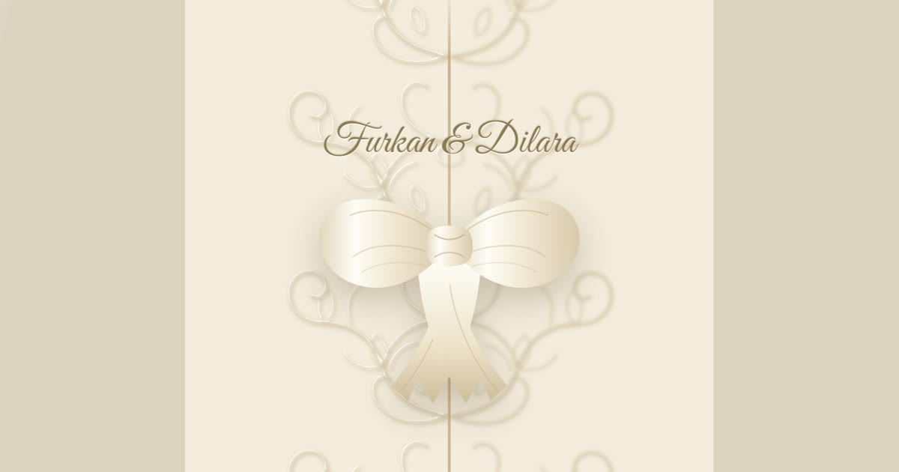
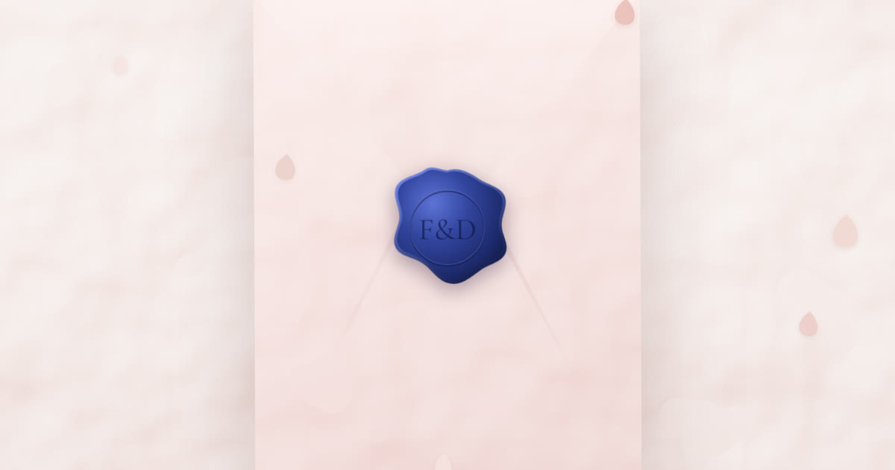

Eleganz
Geprägte Flügel mit Satinschleife, dahinter die Einladung als Heft: fünf nummerierte Bogen mit eigenem Papierton, getrennt durch gerissene Ränder.
Digitale Hochzeitskarten

PrägedruckGeprägte Flügel mit Satinschleife, dahinter die Einladung als Heft: fünf nummerierte Bogen mit eigenem Papierton, getrennt durch gerissene Ränder.

WachssiegelWachssiegel aufbrechen, das blaue Glitzerherz freirubbeln, mit einem Tippen in den Kalender legen. Eine Karte, ein Zweck.
Demo-Datensatz Furkan & Dilara — Paar, Termin, Location und Bankverbindung sind frei erfunden.